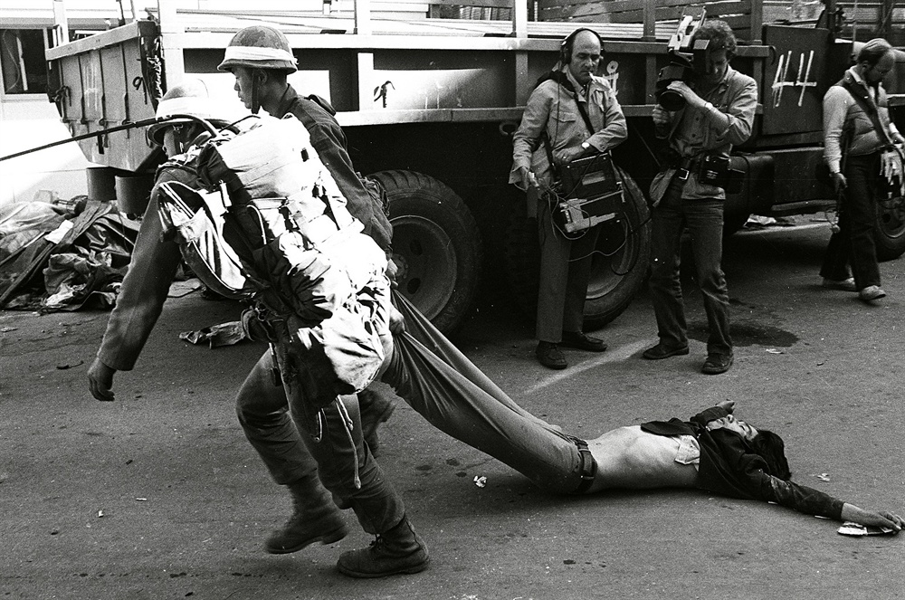

저는 1999년 광주에서 태어났습니다.
어렸을 때 저에게 5월 18일은 그저 가족들과 함께 518국립묘지에 방문하는 날이었습니다.
그곳에서 부모님과 미사를 하고 기도를 드렸지만 어렸던 저는 아무것도 몰랐습니다.
그 중 가장 기억에 남는 날은 미사를 마치고 모두 함께 ‘화려한 휴가’를 본 날 입니다.
그 영화가 광주와 관련된다는 것을 몰랐지만 총소리와 분위기가 무서워 울었던 기억이 있습니다.
초등학교에 들어간 이후부터는 5월 18일에 항상 518관련 영상을 보여주었고 그제서야 광주의 아픔을 알게 되었습니다. 고등학교는 금남로 근처로 가게 되어 5월 18일마다 금남로에서 열리는 518 행사에 참여하였습니다.
그렇게 저와 광주 사람들에게 5월 18일은 특별하고 의미있는 날이었습니다. 하지만 대학에 입학을 해 광주를 벗어나 타지에서 생활하면서 생각보다 많은 사람들이 5월 18일의 아픔에 대해 모른다는 것을 알았습니다.
그래서 그런 사람들을 위해 이 글을 쓰게 되었습니다.
1980년 5월 당시 저희 엄마는 초등학교 4학년이었습니다.
하필 할아버지께서 당직으로 자주 집을 비우셨고 할머니집에는 엄마와 이모들, 그리고 할머니 뿐이었습니다.
할머니 집이 금남로에서 멀었지만 그곳까지 총소리가 들렸고, 엄마와 이모들은 창문을 다 가린 채 책상아래 숨어있었다고 합니다.‘26년’이라는 영화에서 집에 있던 사람이 총에 맞아 죽는 장면이 나오는데 그런 상황이 실제로 많은 집에서 일어났다고 합니다.
그리고 할머니가 집 앞에 잠시 나갔을 때 수레에 사람들을 싣고 지나가는 것을 목격하셨다고 합니다.
그 사람들이 죽은 사람이었는지 확실하지는 않았지만 당시의 분위기와 이상한 이불로 사람을 덮고 갔다는 것 만으로 두려움을 느끼기에 충분했다고 합니다.
할아버지는 금남로 근처에 있는 충장중학교에서 근무하셨는데 총소리가 들리고 몇몇 학생이 금남로로 나가는 것을 보고 시위에 참여하셨다고 합니다. 금남로에는 대학생을 포함해 많은 시민들이 나와있었고 군인들이 시위하는 시민을 제압하는 과정에서 많은 사람들이 다치고 끌려가는 것을 직접 목격하셨다고 합니다. 그리고 집에 오는 길 곳곳에 군인들이 있었다고 합니다.
금남로에서 벗어나 집으로 올 때 전남대학교 근처를 지나오게 되는데 많은 학생들이 전남대학교 정문에서 금남로까지 걸어가면서 시위를 하는 것도 목격할 수 있었다고 합니다.
1980년 전두환이 정권을 잡고 전두환 정권에 반대하는 시위가 일어나기 시작했습니다.
5월 15일에는 서울역에 20만여 명의 국민이 ‘서울의 봄’이라 불리는 대규모 시위를 열기도 했습니다.
하지만 전두환은 눈하나 깜짝하지 않고 오히려 ‘화려한 휴가’라는 작전을 세웁니다.
당시 계엄 확대의 부당성을 주장하며 학생시위를 벌인 유일한 지역이 광주였기 때문에 그 작전은 광주를 타겟으로 하게 됩니다.
계엄군에 의해 많은 사람들이 죽고 일반 시민들에게까지 무차별적으로 폭력을 가하는 것을 보고 광주시민의 시위는 고조되었고 전두환은 점점 광주를 고립시켜 나갑니다.
당시 신군부의 언론 검열 때문에 5월 광주를 제대로 전한 국내 언론은 한 곳도 없었습니다.
언론들은 생활고와 온갖 위협에 시달리는 시민을 위해 군이 광주에 투입하였다고 뉴스를 내었고, 군이 진압하는 동안 도청과 공원에서 폭도들의 저항이 있었다고 표현하였습니다
신문에는 총을 든 난동자들로 광주 시민을 표현하기도 했습니다.
광주로 통하는 모든 통신과 교통이 마비되었던 당시 바깥 시민들은 언론 보도를 믿을 수 밖에 없었습니다.
5.18의 진실은 후에 독일 공영방송에서 내보낸 ‘푸른 눈의 목격자’ 위르겐 힌츠페터 씨의 취재 영상과 5.18단체, 광주시민들의 긴 진상규명 운동 끝에 세상에 알려지게 되었습니다.
이 일로 ‘우리는 사람이 개 끌리듯 끌려가 죽어가는 것을 두 눈으로 똑똑히 보았지만 신문에는 단 한 줄도 싣지 못했다’라며 사표를 내는 기자들도 많았습니다.
5월 18일 항쟁기간에 광주시민들은 올바른 뜻을 함께 나누고 서로 격려하며 항쟁하였습니다.
자율적으로 시위에 참여하였고 스스로 질서를 유지하며 단 한건의 범죄도 일어나지 않을 정도로 눈부신 시민정신과 높은 자치정신을 발휘하였습니다.
피가 부족하다는 소식이 전해지면 헌혈을 하겠다며 병원 앞에 길게 줄을 섰고 민주주의를 위해 목숨을 내놓고 일어난 시민군들이 행여나 지칠까봐 시민들은 너나없이 모여들어 밥을 지어 먹였습니다. 바삐 자리를 뜨는 사람들에게 주먹밥을 주는 것도 잊지 않았습니다.
당시 택시 기사들이 많은 환자를 이송하였고 많은 택시가 모여 경적을 올리고 전조등을 비추며 차량시위를 하는 등 시민들에게 강한 연대의식을 불어 넣고 사기를 북돋았습니다. 이런 택시기사들에게 광주 어머니들은 주먹밥을 뭉쳐 주기도 하였습니다.